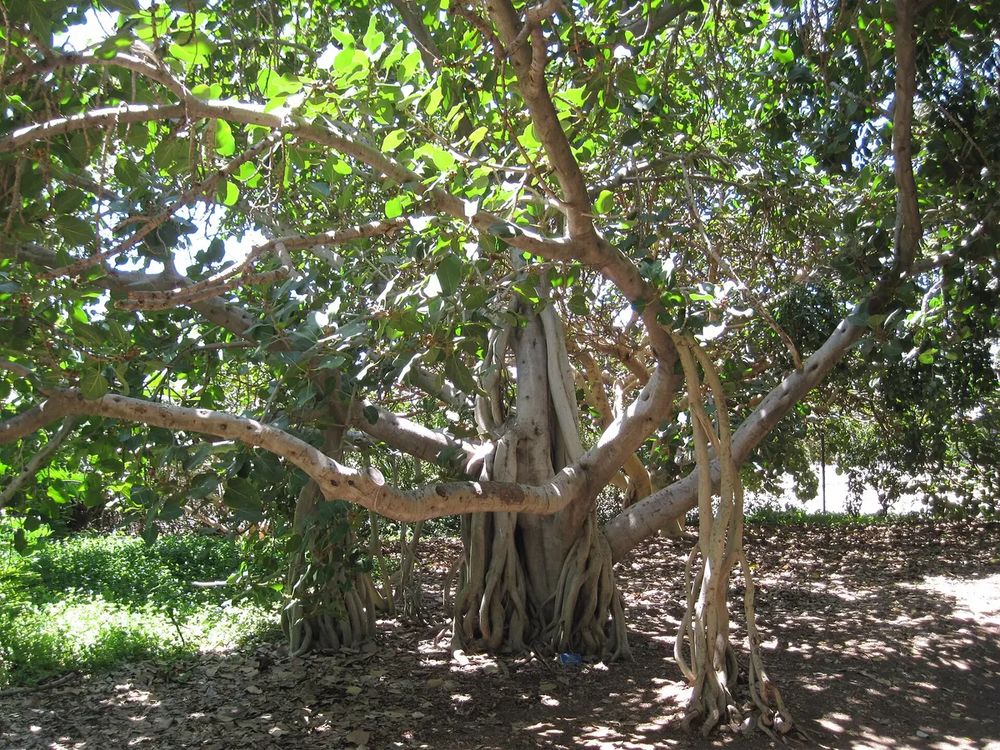

The tree calling you today
Tap to reveal its meaning
Your tree stays here until tomorrow.
The Tree Calling · Free daily oracle card deck
One tree is reaching through the living network to meet you today. Let its shape, story, and invitation help you notice what is already stirring within you.
You do not need to know why a tree called before you draw it. Begin with one slow breath. The meaning may arrive as a feeling now—or echo later in a leaf, a dream, a conversation, or an unexpected tree along your path.

KELA
Root · Trunk · CrownOne tree · One day
Feel the ground beneath you, ask which tree is calling, and take one slow breath.
Carry its attunement with you until tomorrow.The tree calling you today
Tap to reveal its meaningLocal preview: cycle through all 12 working tree cards.
The living network
Trees live through relationship—with soil, fungi, water, weather, animals, and one another. Your card offers a small practice for remembering that you are part of a living system too: supported, affecting, receiving, and becoming.
These twelve meanings are original reflective interpretations created for this oracle. They do not claim to represent universal, Indigenous, religious, or medical teachings. Keep what opens useful reflection; your choices remain your own.
The working deck
Meet every tree while the deck is being fine-tuned. Each carries a different way of entering the network of life.
A grounded oracle
Your tree is drawn in your browser. No name, account, or private question is collected.
Your draw stays until tomorrow, giving the tree's practice time to take root.
The card is a prompt for attention—not a prediction, diagnosis, or command.